202512182026年化解太岁
占卜预测民间文化风水布局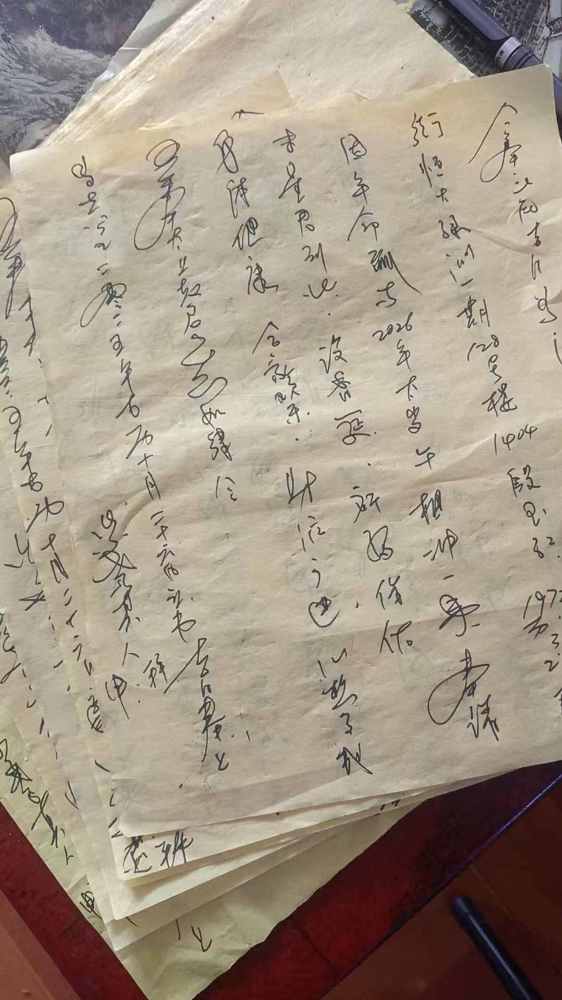
化解太岁中文书
八字化解
加民俗化解
下一步，买点厚黄裱纸，把化太岁文书打印出来，
这样写，累的手抖
今年三个档次，一百，二百，三百
二百就单独做不了
要有供品，酒，请太岁跟和神，一桌，就是一般酒，也得几百了
钱粮，每人一个一个就是几十块
大庙里是二百，就一个自己做的大锦盒，填上名字
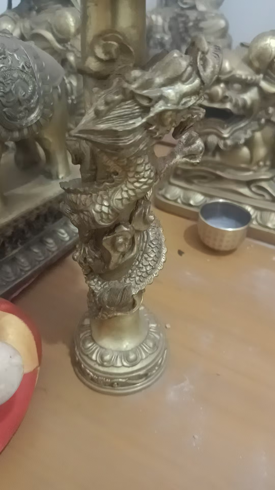
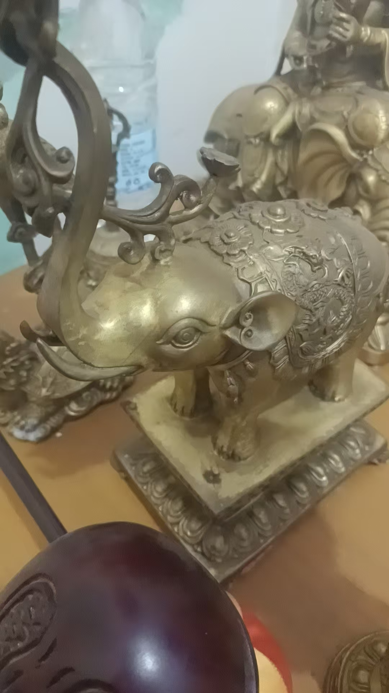
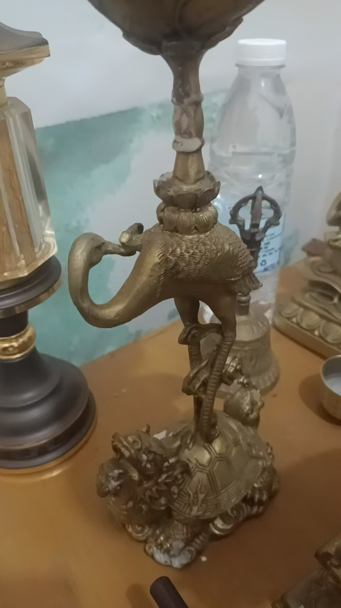
盘龙，大象，龟鹤
这三对灯
分别代表，文章，财，寿
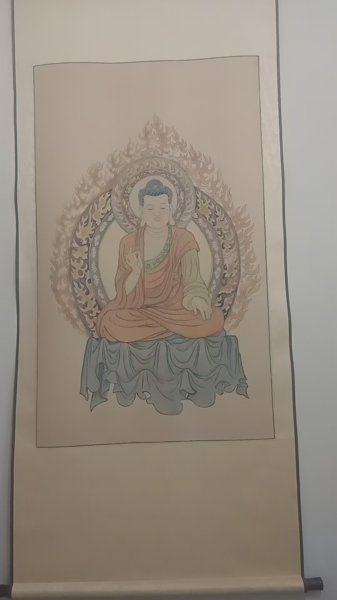
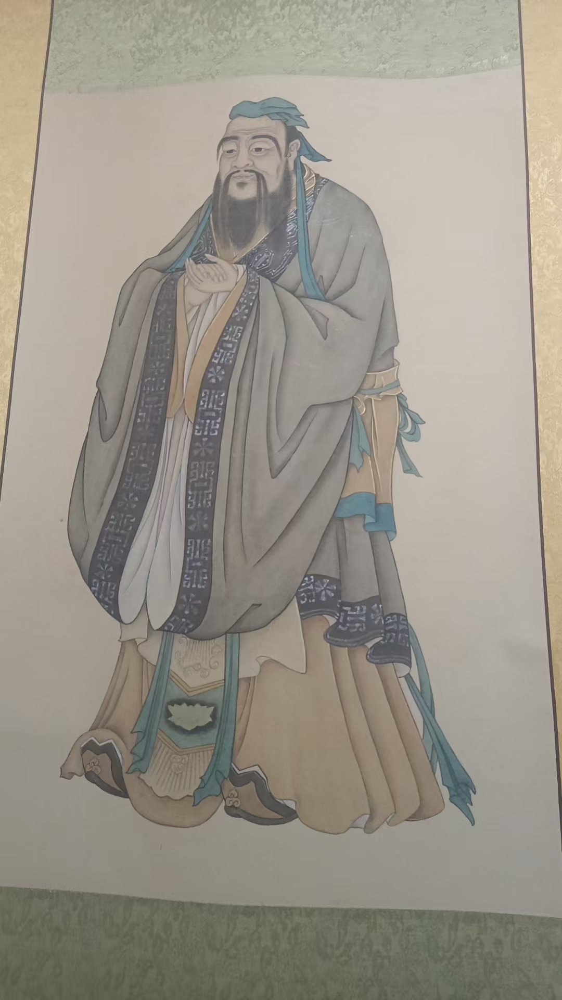
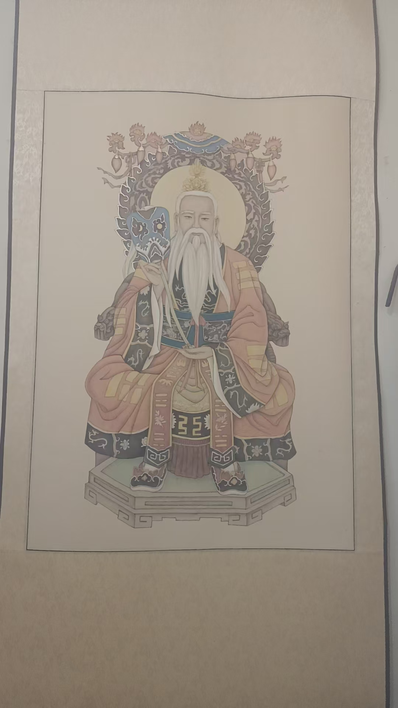
科委那时候讲究广才儒释道
也就是兼修儒释道
又不单独属于儒释道
所以，我说是出自科委
源自民间
老师，都哪些属相必须化太岁
每年不一样
明年丙午，马年
子午冲，属鼠的冲太岁
丑午相害，属牛的
卯午相破，属兔的
午午自刑，马坐太岁
2026年就是这四个
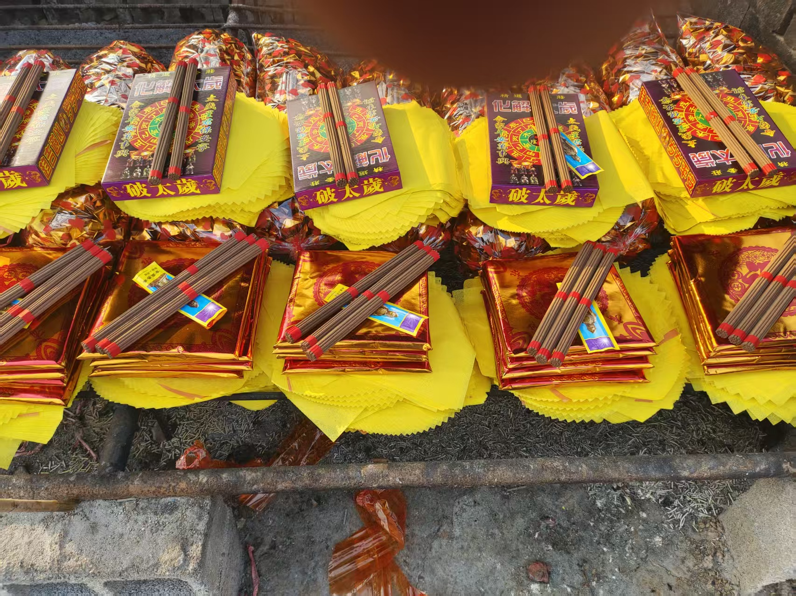
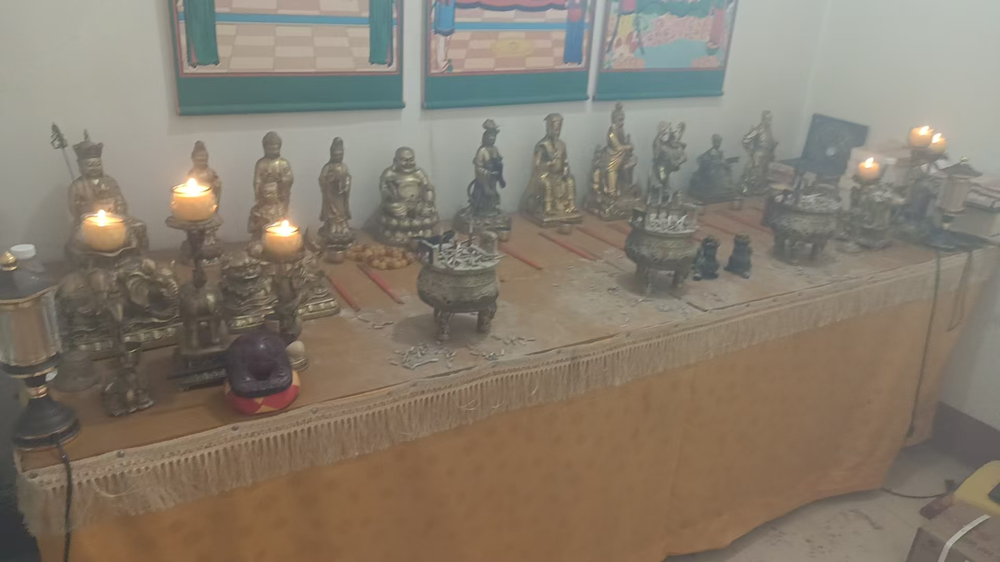
加供灯
一会去买水果，中午供奉
神也信，佛也信，就是民俗
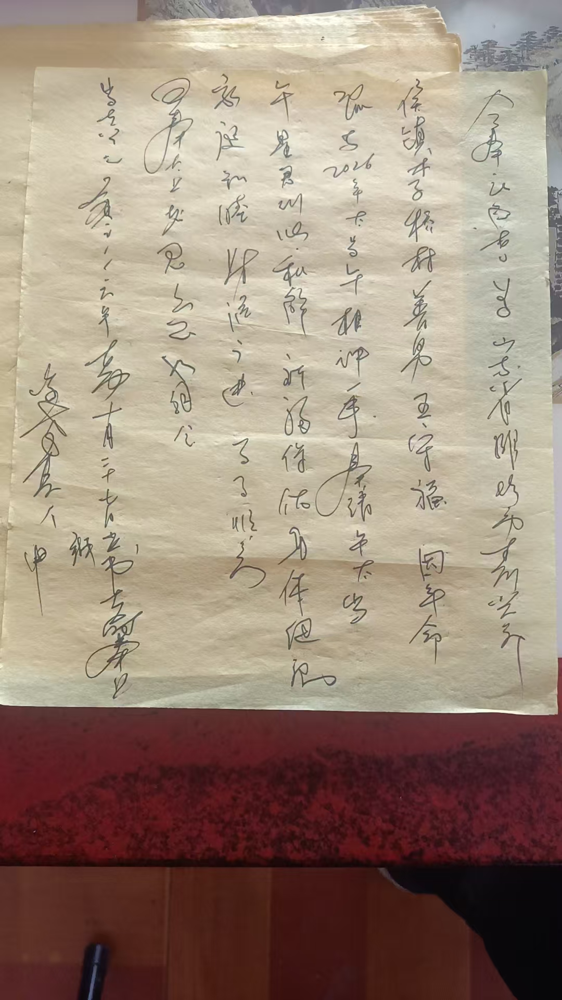
有空再说文书的写法
主要是咱们化解太岁，把念力加进去了，真起到调和一年气场作用
这是主要的
到26年之前都可以化解吧？
尽量早化解
是因为有的大运不好的，再犯太岁
就会出现干透三月
就是2026年的太岁负场，会提前三个月到来
在古历，十一月子月，就已经是明年了
八字化解太岁，就用未星君，来合住午太岁
就不会有刑冲克害了
就是说，还有化太岁，一家一般不只有一个，拿不出上千块银子的
就在自己菩萨面前，没有菩萨像的，就在厨房灶台上，灶王神君面前，没有灶王像也可以
买三样水果，三支香，三杯酒，三杯水
初一或者十五
供一供
念，请2026午太岁，跟未星君来和解（住址名字生日）因犯太岁一事，设香筵，祈福保佑，身体健康，阖家幸福，财源广进，诸事遂心，吾奉太上老君急急如律令
批发商烧元宝，方便多了
以前，买完供品，摆香案，再去拉回元宝来烧，写文书，一天累够呛
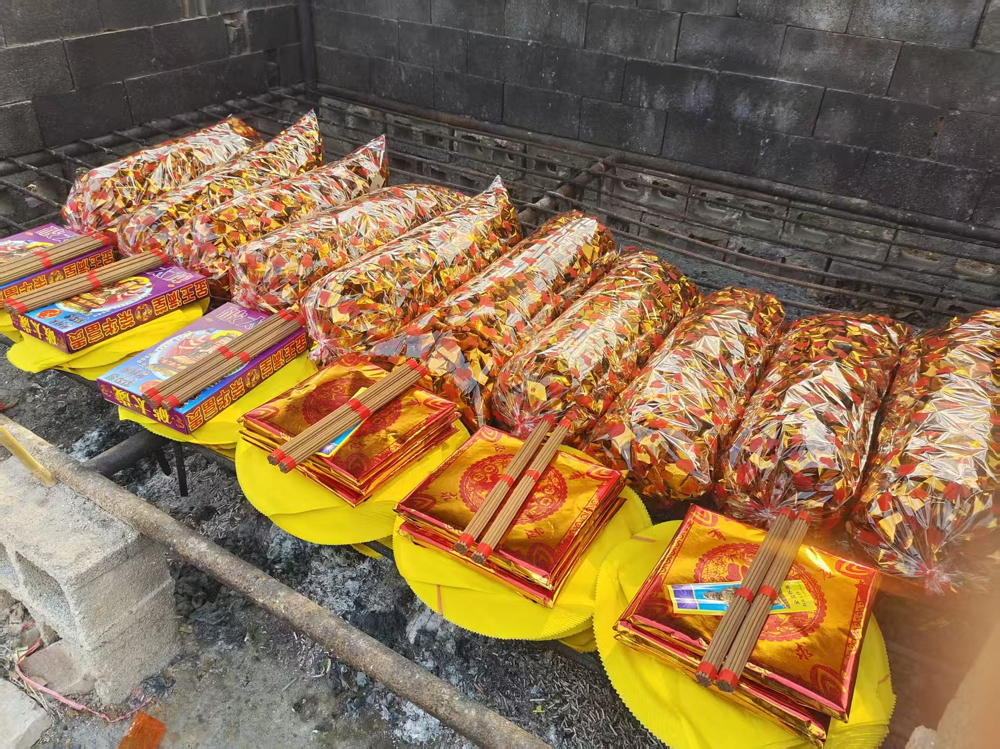